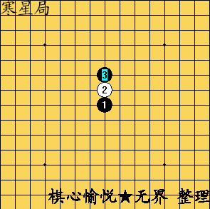

[互动棋谱]给新人推荐一个动态开局图片
#1 [互动棋谱]给新人推荐一个动态开局图片 作者：岳麓小棋后 发表时间：2009-4-19 18:08:08
［ 五子痴 于 2009-4-19 18:18:54 时花20金币送鲜花一朵］
［此帖子已被 茗弈小刀 在 2009-4-22 18:47:24 编辑过］
#2 Re:给新人推荐一个动态开局图片 作者：南京小飞机 发表时间：2009-4-19 18:29:03
我还傻傻的在那点呢
#3 Re:给新人推荐一个动态开局图片 作者：小丸.net 发表时间：2009-4-19 19:05:08
小飞机啥都好，就是爱自作聪明
#4 Re:给新人推荐一个动态开局图片 作者：茗弈小刀 发表时间：2009-4-19 20:37:22
 丸子啥都不好，就是吃着味道还不错。
丸子啥都不好，就是吃着味道还不错。［ 岳麓小棋后 于 2009-4-19 20:39:18 时花20金币送鲜花一朵］
#5 Re:Re:给新人推荐一个动态开局图片 作者：茗弈小刀 发表时间：2009-4-19 20:41:21
引用：谁叫你是憨豆呢！
原文由 南京小飞机 发表于 2009-4-19 18:29:03 :
我还傻傻的在那点呢
#6 Re:给新人推荐一个动态开局图片 作者：茗弈总监 发表时间：2009-4-20 16:05:40
 ,呵呵!这是GIF图片!
,呵呵!这是GIF图片!
#7 Re:给新人推荐一个动态开局图片 作者：小丸.net 发表时间：2009-4-20 17:18:49
我们江苏群里，每天做得事就是聊天下棋打豆豆~~#8 Re:[互动棋谱]给新人推荐一个动态开局图片 作者：星月族 发表时间：2009-12-15 16:19:49
太好了,一直就想找这样一个助记的东西,谢谢了#9 Re:[互动棋谱]给新人推荐一个动态开局图片 作者：弱惜 发表时间：2009-12-16 8:43:16
这东西确实能帮我这样的新手助记，弱弱地问下，可不可以做个四个方向都有的动态开局图片。